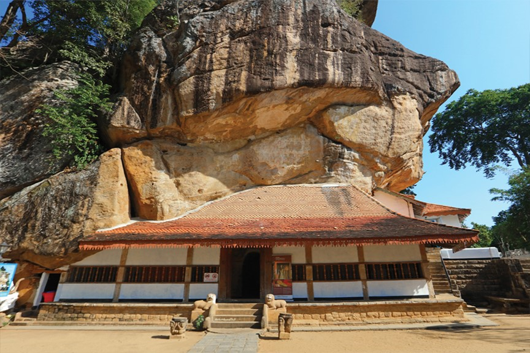
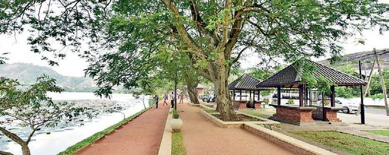
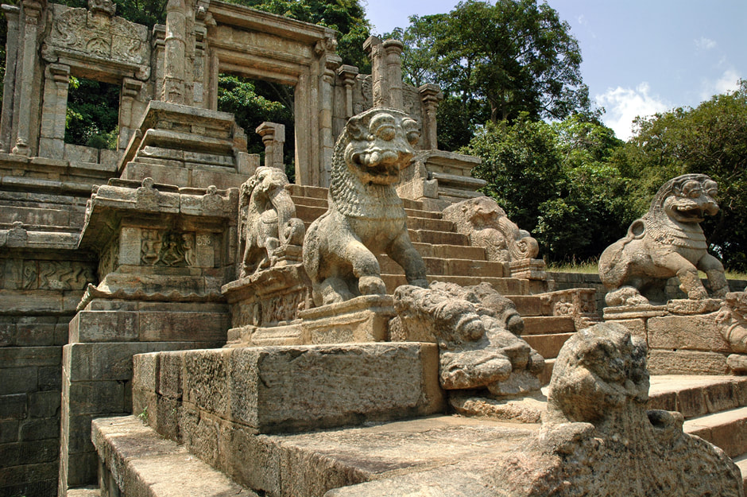

Kurunegala is surrounded by the thriving Coconut plantations and it adds a large number of coconuts for the industry. Even though the city is one of the very busy places in the region, Kurunegala has some of the prettiest country sides. There are several temples and archaeological sites in Kurunegala with historical value. One distinct character of Kurunegala is the beautiful rock formation along the borders of the eastern flank of the city. This beautiful rock formation definitely has provided the security for the city against invading armies in past.
KURUNEGALA

About 20 km away from the Kurunegala is the Ridi Vihara, on a granite monolith. The devotees need to climb the rock-cut staircase to reach the temple, which comprised of 200 steps. According to the historical information it was built by King Dutugemunu in the 1st century BC, as a gratitude for the Monks.
Ridi Vihara

Kurunegala Lake can be described as the lifeblood of the people of Kurunegala. It is supplying the water for agriculture while enhancing the natural beauty of the city. The lake occupies a large portion of the city and located in the centre of the town. Kurunegala Lake is given a facelift during the last several years. Today it has a very beautiful, clean and well maintained green surrounding.It makes a beautiful sight over the city in the days when the lake is full of freshwater after the rain.
Kurunegala Lake

Yapahuwa is in the Pahala-visi-deka Korale, Wanni Hatpattu, of the Northwestern Province. Situated on the outskirts of Kurunegala, it is just three miles from the Maho railway station. For those choosing the rail option, hop off at the Maho station and either use the bus service that shuttles back and forth or, if adventurous enough, trek through the scenic countryside.